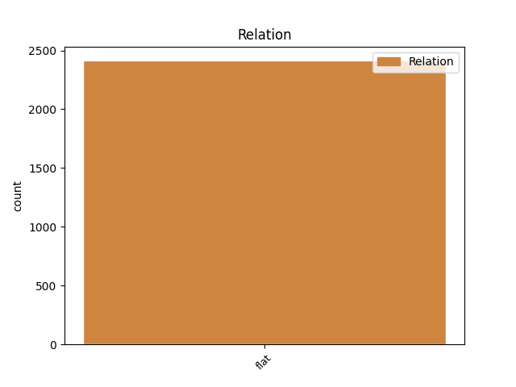
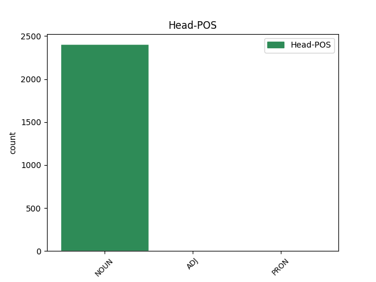
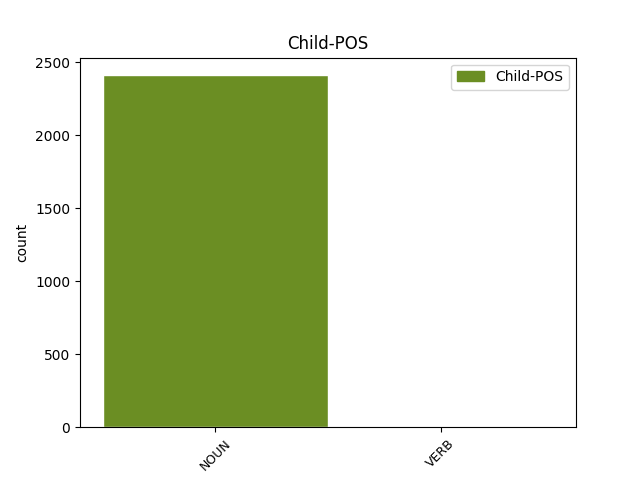

Distribution of features within this leaf



Agreement Rules sorted by frequency.
- When the dependent token is the flat multiword expression(flat) of the head token,
1 دکتر دکتر NOUN N_SING Number=Sing 0 _ _ _
2 یوسفنیا یوسفنیا NOUN N_SING Number=Sing 1 flat _ _
3 اظهار _ _ _ _ 0 _ _ _
4 داشت _ _ _ _ 0 _ _ _
5 : _ _ _ _ 0 _ _ _
6 اطلاعرسانی _ _ _ _ 0 _ _ _
7 مستمر _ _ _ _ 0 _ _ _
8 در _ _ _ _ 0 _ _ _
9 زمینه _ _ _ _ 0 _ _ _
10 پیشگیری _ _ _ _ 0 _ _ _
11 از _ _ _ _ 0 _ _ _
12 بیماریهای _ _ _ _ 0 _ _ _
13 قلبی _ _ _ _ 0 _ _ _
14 ضروریترین _ _ _ _ 0 _ _ _
15 کاری _ _ _ _ 0 _ _ _
16 است _ _ _ _ 0 _ _ _
17 که _ _ _ _ 0 _ _ _
18 میتوان _ _ _ _ 0 _ _ _
19 در _ _ _ _ 0 _ _ _
20 این _ _ _ _ 0 _ _ _
21 خصوص _ _ _ _ 0 _ _ _
22 انجام _ _ _ _ 0 _ _ _
23 داد _ _ _ _ 0 _ _ _
24 . _ _ _ _ 0 _ _ _
Disagree Examples:
1 یعنی _ _ _ _ 0 _ _ _
2 یک _ _ _ _ 0 _ _ _
3 دفعه _ _ _ _ 0 _ _ _
4 پی _ _ _ _ 0 _ _ _
5 به _ _ _ _ 0 _ _ _
6 جدی _ _ _ _ 0 _ _ _
7 بودن _ _ _ _ 0 _ _ _
8 مساله _ _ _ _ 0 _ _ _
9 میبردند _ _ _ _ 0 _ _ _
10 و _ _ _ _ 0 _ _ _
11 میدیدند _ _ _ _ 0 _ _ _
12 به _ _ _ _ 0 _ _ _
13 عنوان عنوان NOUN N_SING Number=Sing 0 _ _ _
14 افراد فرد NOUN N_PL Number=Plur 13 flat _ _
15 صاحب _ _ _ _ 0 _ _ _
16 تجربه _ _ _ _ 0 _ _ _
17 که _ _ _ _ 0 _ _ _
18 نیاز _ _ _ _ 0 _ _ _
19 بود _ _ _ _ 0 _ _ _
20 بیایند _ _ _ _ 0 _ _ _
21 و _ _ _ _ 0 _ _ _
22 روی _ _ _ _ 0 _ _ _
23 این _ _ _ _ 0 _ _ _
24 صندلی _ _ _ _ 0 _ _ _
25 بنشینند _ _ _ _ 0 _ _ _
26 ، _ _ _ _ 0 _ _ _
27 آمدهاند _ _ _ _ 0 _ _ _
28 و _ _ _ _ 0 _ _ _
29 نشستهاند _ _ _ _ 0 _ _ _
30 . _ _ _ _ 0 _ _ _
1 برنامههای _ _ _ _ 0 _ _ _
2 مذهبی _ _ _ _ 0 _ _ _
3 در _ _ _ _ 0 _ _ _
4 انگلیس _ _ _ _ 0 _ _ _
5 در _ _ _ _ 0 _ _ _
6 روزهای روز NOUN N_PL Number=Plur 0 _ _ _
7 یکشنبه یکشنبه NOUN N_SING Number=Sing 6 flat _ _
8 از _ _ _ _ 0 _ _ _
9 شبکههای _ _ _ _ 0 _ _ _
10 آی _ _ _ _ 0 _ _ _
11 تی _ _ _ _ 0 _ _ _
12 وی _ _ _ _ 0 _ _ _
13 و _ _ _ _ 0 _ _ _
14 بی _ _ _ _ 0 _ _ _
15 بی _ _ _ _ 0 _ _ _
16 سی _ _ _ _ 0 _ _ _
17 یک _ _ _ _ 0 _ _ _
18 پخش _ _ _ _ 0 _ _ _
19 میشده _ _ _ _ 0 _ _ _
20 است _ _ _ _ 0 _ _ _
21 ؛ _ _ _ _ 0 _ _ _
22 مثلا _ _ _ _ 0 _ _ _
23 آی _ _ _ _ 0 _ _ _
24 تی _ _ _ _ 0 _ _ _
25 وی _ _ _ _ 0 _ _ _
26 طبق _ _ _ _ 0 _ _ _
27 روال _ _ _ _ 0 _ _ _
28 برنامهای _ _ _ _ 0 _ _ _
29 زنده _ _ _ _ 0 _ _ _
30 از _ _ _ _ 0 _ _ _
31 مراسم _ _ _ _ 0 _ _ _
32 کلیسا _ _ _ _ 0 _ _ _
33 نشان _ _ _ _ 0 _ _ _
34 میدهد _ _ _ _ 0 _ _ _
35 . _ _ _ _ 0 _ _ _
1 برنامههای _ _ _ _ 0 _ _ _
2 مذهبی _ _ _ _ 0 _ _ _
3 در _ _ _ _ 0 _ _ _
4 انگلیس _ _ _ _ 0 _ _ _
5 در _ _ _ _ 0 _ _ _
6 روزهای _ _ _ _ 0 _ _ _
7 یکشنبه _ _ _ _ 0 _ _ _
8 از _ _ _ _ 0 _ _ _
9 شبکههای شبکه NOUN N_PL Number=Plur 0 _ _ _
10 آی آی NOUN N_SING Number=Sing 9 flat _ _
11 تی _ _ _ _ 0 _ _ _
12 وی _ _ _ _ 0 _ _ _
13 و _ _ _ _ 0 _ _ _
14 بی _ _ _ _ 0 _ _ _
15 بی _ _ _ _ 0 _ _ _
16 سی _ _ _ _ 0 _ _ _
17 یک _ _ _ _ 0 _ _ _
18 پخش _ _ _ _ 0 _ _ _
19 میشده _ _ _ _ 0 _ _ _
20 است _ _ _ _ 0 _ _ _
21 ؛ _ _ _ _ 0 _ _ _
22 مثلا _ _ _ _ 0 _ _ _
23 آی _ _ _ _ 0 _ _ _
24 تی _ _ _ _ 0 _ _ _
25 وی _ _ _ _ 0 _ _ _
26 طبق _ _ _ _ 0 _ _ _
27 روال _ _ _ _ 0 _ _ _
28 برنامهای _ _ _ _ 0 _ _ _
29 زنده _ _ _ _ 0 _ _ _
30 از _ _ _ _ 0 _ _ _
31 مراسم _ _ _ _ 0 _ _ _
32 کلیسا _ _ _ _ 0 _ _ _
33 نشان _ _ _ _ 0 _ _ _
34 میدهد _ _ _ _ 0 _ _ _
35 . _ _ _ _ 0 _ _ _
1 در _ _ _ _ 0 _ _ _
2 سال _ _ _ _ 0 _ _ _
3 ۱۹۶۸ _ _ _ _ 0 _ _ _
4 ، _ _ _ _ 0 _ _ _
5 دو _ _ _ _ 0 _ _ _
6 تحقیق _ _ _ _ 0 _ _ _
7 زمینهیابی _ _ _ _ 0 _ _ _
8 در _ _ _ _ 0 _ _ _
9 خصوص _ _ _ _ 0 _ _ _
10 نگرشهای _ _ _ _ 0 _ _ _
11 مخاطبان _ _ _ _ 0 _ _ _
12 برنامه _ _ _ _ 0 _ _ _
13 مذهبی _ _ _ _ 0 _ _ _
14 تلویزیون _ _ _ _ 0 _ _ _
15 به _ _ _ _ 0 _ _ _
16 عقاید _ _ _ _ 0 _ _ _
17 مذهبی _ _ _ _ 0 _ _ _
18 افراد _ _ _ _ 0 _ _ _
19 ، _ _ _ _ 0 _ _ _
20 نگرانیها _ _ _ _ 0 _ _ _
21 و _ _ _ _ 0 _ _ _
22 مشکلات _ _ _ _ 0 _ _ _
23 شان _ _ _ _ 0 _ _ _
24 از _ _ _ _ 0 _ _ _
25 طریق _ _ _ _ 0 _ _ _
26 شبکههای شبکه NOUN N_PL Number=Plur 0 _ _ _
27 آیبیای _ NOUN N_SING Number=Sing 26 flat _ _
28 و _ _ _ _ 0 _ _ _
29 آی _ _ _ _ 0 _ _ _
30 تی _ _ _ _ 0 _ _ _
31 ای _ _ _ _ 0 _ _ _
32 انجام _ _ _ _ 0 _ _ _
33 شد _ _ _ _ 0 _ _ _
34 ) _ _ _ _ 0 _ _ _
35 هالدنی _ _ _ _ 0 _ _ _
36 ، _ _ _ _ 0 _ _ _
37 ۱۹۷۸ _ _ _ _ 0 _ _ _
38 ( _ _ _ _ 0 _ _ _
39 . _ _ _ _ 0 _ _ _
1 این _ _ _ _ 0 _ _ _
2 تحقیق _ _ _ _ 0 _ _ _
3 نخست _ _ _ _ 0 _ _ _
4 در _ _ _ _ 0 _ _ _
5 سال _ _ _ _ 0 _ _ _
6 ۱۹۶۳ _ _ _ _ 0 _ _ _
7 در _ _ _ _ 0 _ _ _
8 موسسه _ _ _ _ 0 _ _ _
9 گالوپ _ _ _ _ 0 _ _ _
10 برای _ _ _ _ 0 _ _ _
11 بی _ _ _ _ 0 _ _ _
12 بی _ _ _ _ 0 _ _ _
13 سی _ _ _ _ 0 _ _ _
14 انجام _ _ _ _ 0 _ _ _
15 شد _ _ _ _ 0 _ _ _
16 و _ _ _ _ 0 _ _ _
17 بعدا _ _ _ _ 0 _ _ _
18 با _ _ _ _ 0 _ _ _
19 تحقیقات تحقیق NOUN N_PL Number=Plur 0 _ _ _
20 آیبیای _ NOUN N_SING Number=Sing 19 flat _ _
21 در _ _ _ _ 0 _ _ _
22 اواخر _ _ _ _ 0 _ _ _
23 دهه _ _ _ _ 0 _ _ _
24 ۱۹۷۰ _ _ _ _ 0 _ _ _
25 ) _ _ _ _ 0 _ _ _
26 هالدنی _ _ _ _ 0 _ _ _
27 ، _ _ _ _ 0 _ _ _
28 ۱۹۷۸ _ _ _ _ 0 _ _ _
29 ( _ _ _ _ 0 _ _ _
30 و _ _ _ _ 0 _ _ _
31 در _ _ _ _ 0 _ _ _
32 اواخر _ _ _ _ 0 _ _ _
33 دهه _ _ _ _ 0 _ _ _
34 ۱۹۸۰ _ _ _ _ 0 _ _ _
35 تایید _ _ _ _ 0 _ _ _
36 شد _ _ _ _ 0 _ _ _
37 . _ _ _ _ 0 _ _ _